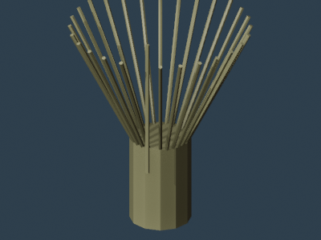
茶杓tea_chashaku · 30 faces
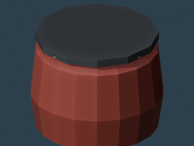
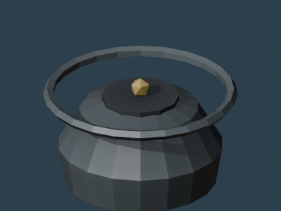
鉄瓶tea_tetsubin · 228 faces
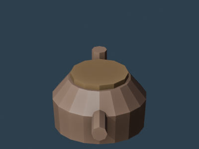
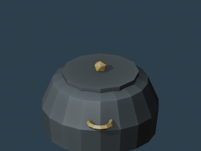
茶釜tea_chagama · 228 faces
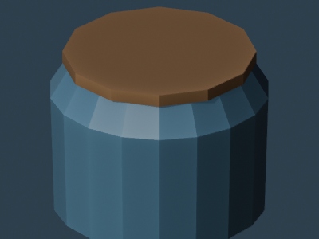
水指tea_mizusashi · 150 faces
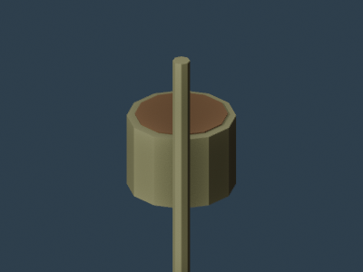
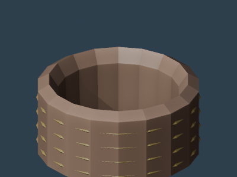
蓋置tea_futaoki · 412 faces
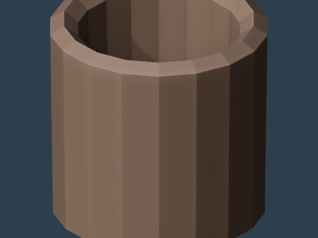
湯呑kitchen_yunomi · 110 faces
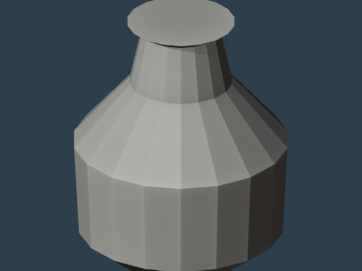
徳利kitchen_tokkuri · 92 faces
お猪口kitchen_ochoko · 92 faces
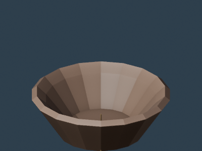
すり鉢kitchen_suribachi · 102 faces
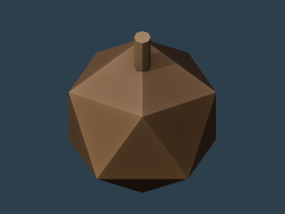
すりこぎkitchen_surikogi · 30 faces
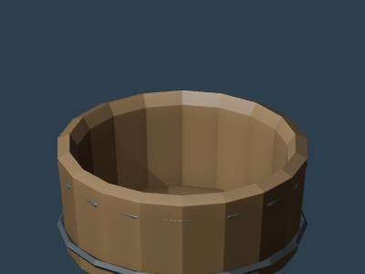
飯切kitchen_hangiri · 252 faces
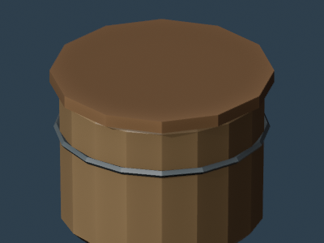
お櫃kitchen_ohitsu · 150 faces
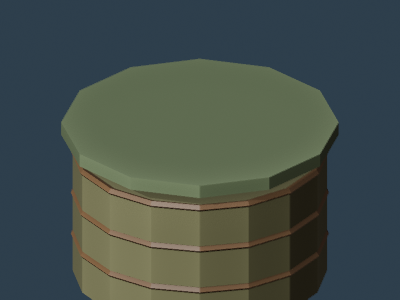
せいろkitchen_seiro · 308 faces
重箱kitchen_jubako · 42 faces
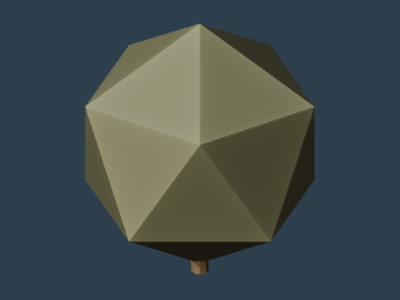
しゃもじkitchen_shamoji · 30 faces
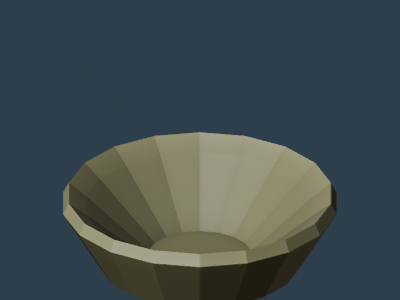
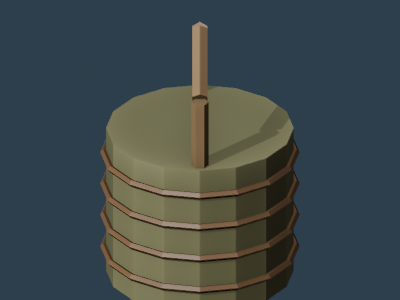
竹籠bamboo_takekago · 370 faces
竹花入bamboo_hanaire · 254 faces
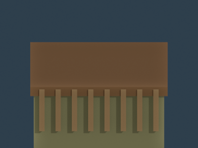
竹細工箱bamboo_takezaiku_box · 60 faces
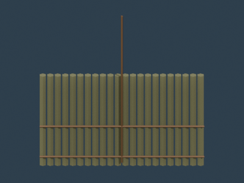
簾bamboo_sudare · 206 faces
茶筒bamboo_chasho · 112 faces
竹水差しbamboo_takeshibuki · 102 faces
篠笛bamboo_takebue · 254 faces
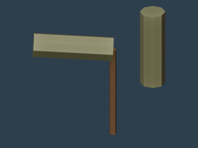
竹とんぼbamboo_take_tombo · 30 faces
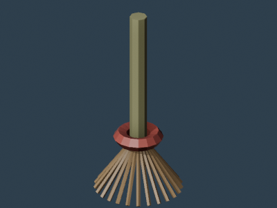
箒bamboo_houki · 265 faces
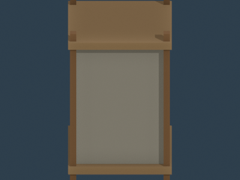
提灯home_chochin · 400 faces
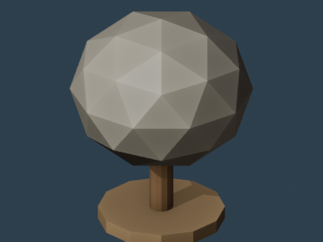
雪洞home_bonbori · 188 faces
火鉢home_hibachi · 52 faces
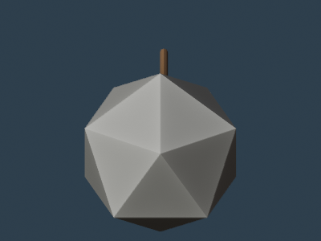
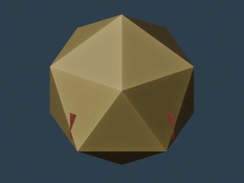
座布団home_zabuton · 106 faces
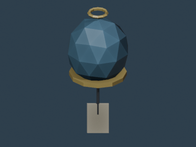
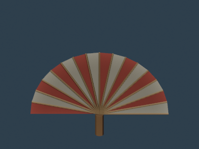
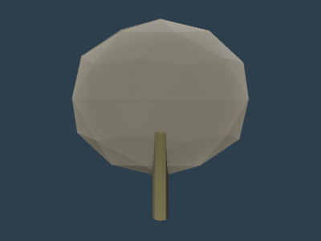
団扇wear_uchiwa · 160 faces
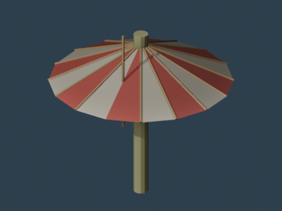
和傘wear_wagasa · 190 faces
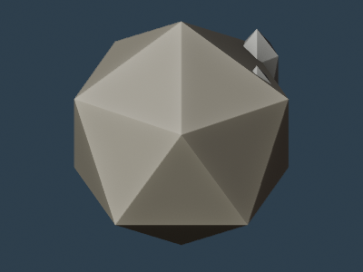
簪wear_kanzashi · 130 faces
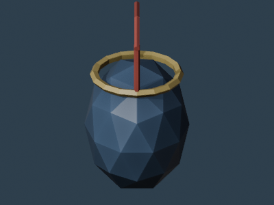
巾着wear_kinchaku · 192 faces
風呂敷wear_furoshiki · 50 faces
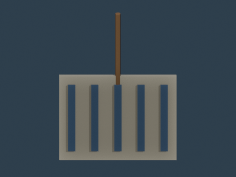
手拭wear_tenugui · 46 faces
硯writing_suzuri · 18 faces
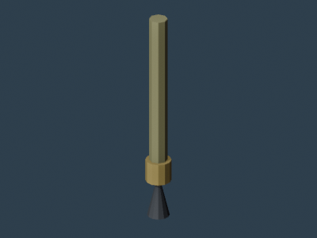
文鎮writing_bunchin · 134 faces
巻物writing_makimono · 64 faces
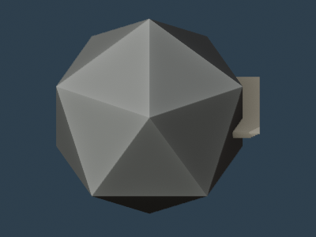
和紙writing_washi · 150 faces
硯箱writing_suzuribako · 32 faces
判子writing_hanko · 108 faces
印籠writing_inro · 46 faces
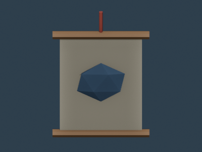
掛軸writing_kakejiku · 56 faces
だるまfolk_daruma · 200 faces
こけしfolk_kokeshi · 168 faces
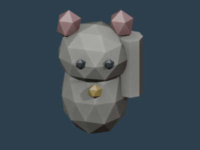
招き猫folk_manekineko · 270 faces
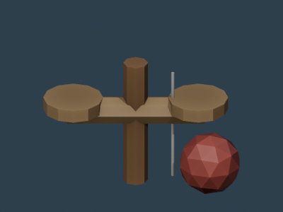
けん玉folk_kendama · 138 faces
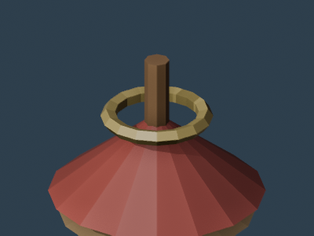
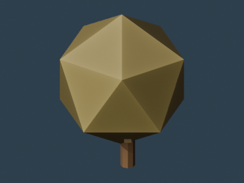
羽子板folk_hagoita · 108 faces
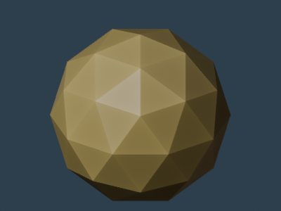
お手玉folk_otedama · 240 faces
でんでん太鼓folk_denden_daiko · 88 faces
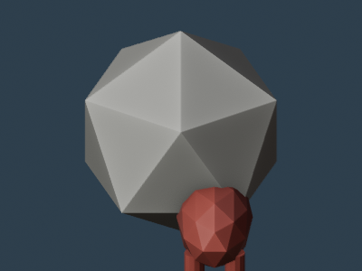
赤べこfolk_akabeko · 194 faces
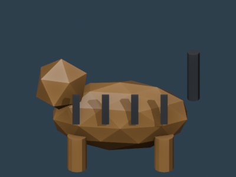
張子の虎folk_hariko_tora · 190 faces
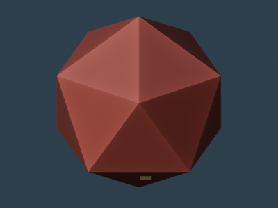
お守りritual_omamori · 82 faces
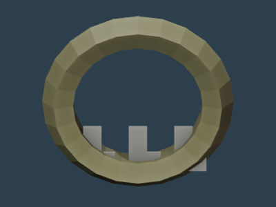
注連縄ritual_shimenawa · 156 faces
神楽鈴ritual_suzu · 310 faces
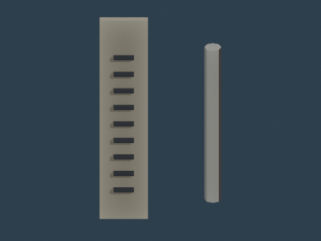
おみくじritual_omikuji · 70 faces
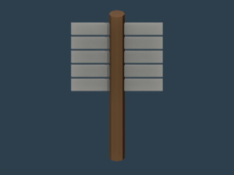
御幣ritual_gohei · 70 faces
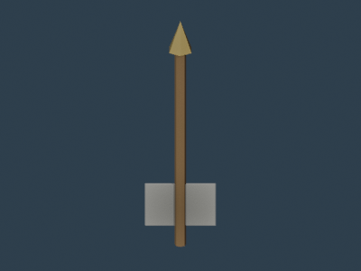
破魔矢ritual_hamaya · 29 faces
紙垂ritual_shide · 82 faces
鏡餅飾りritual_kagami_mochi · 206 faces
和箪笥woodwork_tansu · 242 faces
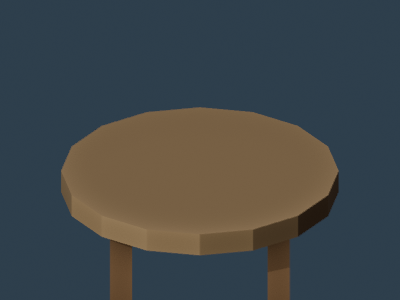
ちゃぶ台woodwork_chabudai · 42 faces
座椅子woodwork_zaisu · 18 faces
炬燵woodwork_kotatsu · 36 faces
長持woodwork_nagamochi · 144 faces
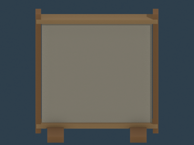
衝立woodwork_tsuitate · 42 faces
書棚woodwork_shodana · 78 faces
踏み台woodwork_fumikiri · 28 faces
木盆woodwork_obon · 122 faces
組子細工woodwork_kumiko · 148 faces
おりんcraft_orin · 116 faces
木魚craft_mokugyo · 130 faces
切子グラスcraft_kiriko · 302 faces
漆器椀craft_shikki_wan · 186 faces
蒔絵箱craft_makie_bako · 112 faces
兜飾りcraft_kabuto_ornament · 242 faces
飾り樽craft_kazaridaru · 364 faces
錫製酒器craft_sake_flask · 148 faces
組紐craft_kumihimo · 240 faces